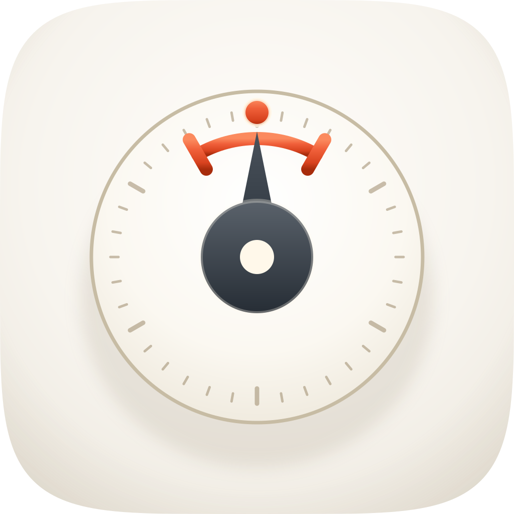

Porcelain register, warm-neutral ground with one vermilion accent · the take audited on real renders at 1024 / 128 / 64 / 48 / 32 / 16.
Read this before the scores. This is a retrospective sheet, written on 19 August 2026 by rendering icon.svg as it stands and looking at the output. It is not the record of a commission, because no commission was recorded: this directory holds one artwork, no icon-notes.md, no losing takes, no fidelity-runs/ and no panel verdicts. So there was no prior reasoning to recover and nothing here is carried forward from an earlier judgment — every score below was assigned today, from the renders, against the 12-point rubric. Nothing on this page claims that three engines were run, that a fidelity loop closed the master against a reference, or that a blind panel judged it, because none of that happened as far as this directory can show.
Two consequences are stated plainly rather than worked around. One: there is a single take, and the pipeline's floor is three, so this sheet is a verdict with no comparison behind it and audit_sheet.py check correctly refuses it. Two: the take scores 8/12, below the 10/12 delivery bar. Both are properties of the commission, not of this page, and the fix for each is named at the foot of the sheet.

A · icon.svg · 1024 source
The single take, with renders, its retrospective rubric score and verdict
Take
Renders at 128 / 64 / 48 / 32 / 16 css px (2× retina sources), plus the 16px squint magnified
Rubric
Verdict
A · icon.svgthe only artwork in the directory; icon-src.svg is a byte-identical duplicate of it, and icon-gen.py is its generator
1286448321616 ×6
8 / 12
A porcelain instrument dial on a porcelain cushion tile: a taupe rim ring, a full ring of minute ticks, a graphite hub with a cream centre, a tapered needle standing near vertical, and a vermilion bracket arc with a target dot at the top of the travel. The subject reads — a gauge with a marked target the needle is arriving at — and it reads at 128 and at 48. Passing: #1, because the artwork is full-bleed 1024 with the family superellipse as a clipPath and no baked corner or drop shadow (corner alpha 0 on all four extremes, 95.0% opaque coverage); #2, with the dial at 65.1% of tile width on symmetric 178px side margins; #3, nameable in one phrase; #5 and #6, one soft top-left key and one warm-neutral family plus a single vermilion accent; #12, no text. Deducted at #4, #7, #10 and #11. #7 is the measured one and it is severe: the dial face sits at 1.05:1 against the tile beside it, so the primary form has essentially no figure-ground of its own and is found only by its 1.35:1 rim and by the marks standing on it. #4 follows from it — by the 32px source the tick ring and the bracket arc are gone and what survives is a pale disc with a dark hub and a faint warm speck, so the icon keeps a silhouette but loses the argument that makes it a goal. #10 fails by construction: fidelity.py structure reports 0 named <g> layers, so there is no bg/mid/fg/highlight plan to hand to Icon Composer and the Dark, Clear and Tinted variants have nothing to be built from. #11 is a judgment rather than a measurement: a tick-ring dial with a needle is a step from a generic speedometer glyph, and the one element that makes it specific — the bracket arc and its target dot — is also the first thing to disappear as the icon shrinks.
What was measured, and how. Relative-luminance ratios computed from the sRGB values of audit-renders/a-1024.png (linearised, 0.2126R + 0.7152G + 0.0722B), sampled as 28×28px patches; the dial diameter read off the luminance profile of the row through the dial centre. These are readings of this render, not estimates.
Quantity
Measured
Against
dial face vs tile beside it
1.05:1
#7 wants 3:1 — fails
dial rim vs tile
1.35:1
the only separation the primary form has
hub vs dial face
10.11:1
strong; this is what carries the small read
vermilion arc and dot vs dial face
3.51:1
clears 3:1, but is gone by 16px
dial outer diameter
667px = 65.1% of tile
composition constant is 55–65% — a whisker over
side margins
178px both sides
symmetric
corner alpha, four extremes
0, 0, 0, 0
#1 mask discipline — passes
named <g> layers
0 (1 group, the clip wrapper)
#10 variant robustness — fails
paths / gradients / filters
3 / 6 / 1, 11,448 bytes
well inside the 400-path, 200KB envelope
Recommendation: ship nothing further on this icon until the layer plan lands.icon.svg is what ships today, and this sheet records it at 8/12 against a 10/12 bar, so the honest status is “in the marketplace, not yet delivered to the pipeline's standard” rather than “approved”. Two defects block it, and both are in the artwork rather than on this page. (1) No layer plan.icon-gen.py emits one anonymous <g> under the clip; splitting the same three paths into named bg / mid / fg / highlight groups would clear #10 and the fidelity.py structure gate without changing a single rendered pixel, which makes it the cheapest fix in the set. (2) The dial has no figure-ground. 1.05:1 against its own tile is the porcelain register's standing trade taken further than the siblings take it; the usual moves are to deepen the tile's vignette under the dial, warm or darken the face a few points, or thicken the rim, and any of them wants re-measuring rather than eyeballing. Separately, the pipeline's three-take floor has never been met here, so there is no evidence about what this direction beat. Anything that changes the artwork should re-render this sheet, and this sheet's scores should then be replaced rather than amended, because they are readings of one specific render.
Rubric: the 12-point icon audit from icon-directions.md (mask discipline, grid, silhouette, 16px identity, single light model, palette discipline, figure-ground, depth coherence, era coherence, variant robustness, personality, no-text) — checks 1–4 non-negotiable, delivery bar ≥10/12. Renders produced by python3 audit_sheet.py render plugins/better-goal/assets --take a=icon.svg:svg (1024 / 256 / 128 / 96 / 64 / 32 sources), recorded in audit-renders/render-manifest.json.
Sheet provenance, in full: before 19 August 2026 there was no audit.html in this directory at all, and audit-renders/ held five files under the take id audit which were byte-identical copies of the shipped icon.png, icon-256.png and icon-128.png rather than renders of the master — so the directory could not show that anything had been rendered for audit. Those copies were replaced on that date by real rsvg-convert renders of icon.svg at the six sheet sizes, under the take id a. The shipped icon.svg, icon.png, icon-256.png and icon-128.png were not touched and are byte-for-byte as they were.